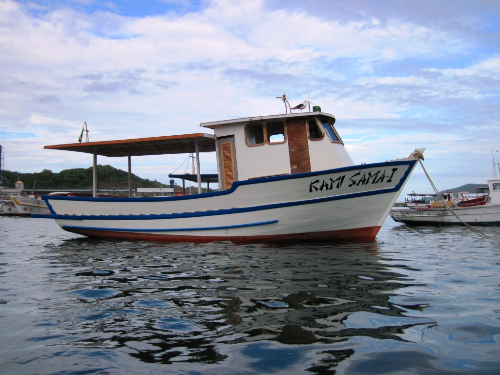

Balsa, ferryboat, ferry-boat, ferry ou ferribote é uma embarcação de fundo chato, com pequeno calado, para poder operar próximo às margens e em águas rasas, e grande boca, muitas vezes utilizada para transporte de veículos. Embora a designação ferryboat seja um anglicismo, é amplamente usada. O aportuguesamento "ferribote" existe mas raramente é utilizado.
Um barco a vapor é uma embarcação propelida por um motor a vapor que aciona rodas de pás montadas inicialmente à meia-nau, nas laterais (bombordo e estibordo) e depois na popa. São tipicamente caracterizados por possuírem grandes chaminés.
Um barco de pesca, ou mais formalmente navio de pesca, é qualquer tipo de embarcação construída ou adaptada para a atividade da pesca. Os barcos de pesca podem variar desde uma simples jangada ou canoa até grandes navios que podem efetuar campanhas de pesca de vários meses sem regressar ao porto-base, os barcos-fábrica.
As adaptações para a pesca podem ser máquinas para operar as artes de pesca, como guinchos ou aladores, que não implicam modificações no casco, mas podem também levar à alteração da estrutura básica, como no caso de alguns arrastões em que a popa contém uma rampa para a operação da rede de arrasto.
As embarcações de pesca mais simples e mais pequenas, como as canoas e jangadas, são geralmente utilizadas para a pesca artesanal à linha ou com redes simples, como as redes de emalhar ou os xalavares.
Também existem as embarcações projetadas para aqueles que pescam por prazer ou diversão, como os trawlers. O trawler, tradução literal de rebocador, é um barco com casco semi-deslocante, diferentemente do casco planador de uma lancha, que é mais veloz e instável.

Barco de transporte é todo aquele que geralmente é construído em estaleiro devido à necessidade de cálculo de estrutura mais acurada, quanto à carga e ao turismo que deverá transportar; bem como de guias de porte legal no de transporte, devidamente autorizado por autoridade.
Como exemplo as diversas unidades de balsa que ligam cidades atravessadas por rio, lago e braço de mar, diversas unidades de escuna de utilização no turismo de forma geral como de unidades de Gôndola, (utilizada no transporte e no turismo de Veneza, na Itália).
O Escaler é um barco que pode ser classificado como de transporte nessa categoria, tanto de carga como de turismo, devido ao transporte de determinado porte comum, como salva vidas de paquete, e outras classes de navios; exatamente pelo cálculo do resgate da tonelagem da embarcação ou nave de maior porte, quando em naufrágio.
Canoa em geral é a definição que se aplica a uma embarcação leve a remo ou a vela, algumas com motor de popa, geralmente em uma só peça, como troncos de árvores, ou a um objeto similar. Segundo o dicionário inglês Merriam-Webster, a canoa é "um barco estreito e leve, com ambas as extremidades afiadas, e que é normalmente propelido por remos". Também é a definição vernácula dada na floresta tropical e subtropical úmida do Brasil a insetos Lepidoptera da tribo Preponini e gêneros Prepona, Archaeoprepona e Mesoprepona, cujas marcações das asas em vistas superiores, em azul, lembram uma canoa de perfil (canoa-azul); ainda se definindo de canoa-amarela às borboletas do gênero Historis e de canoa-rosa à espécie Zaretis itys (também conhecida por borboleta-folha[6] ou folha-seca). Por fim, canoa é a gíria usada para definir um homem que se deixa controlar pela mulher.
Iate é uma embarcação a vela ou a motor utilizada basicamente para lazer no mar, rios ou lagos. Atualmente existem desde barcos com confortos dignos de mansões, com luxo e sofisticação, aposentos divididos, cozinha, sanitários, ar-condicionado, até pequenas embarcações de lazer. Para este artigo, dividiremos em iates a vela e a motor.
Um veleiro é uma embarcação propelida por um velame, conjunto de velas de tecido de corte e cálculo apropriado, apoiado em um ou mais mastros e controlados por um conjunto de cabos chamado cordoalha, todo esse sistema costuma denominar-se armadoria.
Possui também um patilhão e um leme apropriado segundo sua armadoria, que impedem a deriva e forçam o conjunto avante em sua rota.
O Aerobarco é um veículo de múltipla utilidade. É muito utilizado em locais pantanosos, rios, lagos, lagoas, locais de difícil acesso a embarcações comuns, devido ao pequeno calado, menos de 1 metro necessário para sua navegabilidade. Navega com até um palmo de lâmina d'água, ou na lama.
É montado sobre uma estrutura plana, com uma grande ventilador na popa, fora da água, sendo manobrado por uma alavanca que movimenta os lemes, situados lateralmente à hélice que impulsiona o barco, utilizado nos pântanos da Flórida, nos Estados Unidos da América.
Existe ainda o aerobarco com asas submersas (quando não está em movimento), na altura da proa, e motor de mais de 200 cavalos na popa, quando o motor é acionado o barco é projetado para fora da água, diminuindo consideravelmente o atrito dessa nave, pois só as asas e o motor permanecem dentro da água, tal embarcação também chamada aerobarco adquirindo velocidades de 80 a 200 nós, no Brasil, tem-se o serviço do aerobarco na travessia da Baía de Guanabara, na cidade de Niterói.